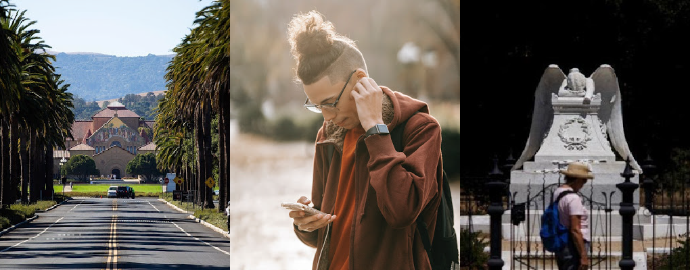

An Interactive Experience Remembering Those Lost to COVID-19

The COVID Memorial SoundWalk is a [2-mile?] walking route on the Stanford campus, accompanied by a specially selected playlist of music by Stanford musicians synchronized to your progress around the route. It takes approximately 45 minutes to complete.
Joining the SoundWalk is part of a shared communal experience dedicated to remembering those who have been lost to COVID, including a new site-specific art installation that will be built over the Spring Quarter.
Experience The Soundwalk
To join the Stanford COVID Memorial SoundWalk, click on the map below.
Your browser will display a map showing the route and your position
A specially-curated music playlist will play that reflects your location as you travel around the map
The start point for the journey is the corner of University Avenue and El Camino Rd
For the best experience, use headphones.
Click on the map below to start the guided Soundwalk
Full Walking Directions
Start at 1 University Ave in Palo Alto at the Stanford gate. Walk South along Palm Drive. Cross Arboretum safely. Take the right fork toward the Angel of Grief. Stop at the Angle of Grief. Bear left to the Mausoleum. Stop at the Mausoleum. Continue to the Cactus Garden and Walk Around the Cactus garden oval. Head back toward the Mausoleum. Bear right at the Mausoleum. Head towards Palm and Campus Drive along a tree lined path. Stop at the Stanford Griffins. Make a left back up Palm Drive. Cross safely over Arboretum. End at the starting point of the walk.
Share Your Story!
"We all must be story tellers for each other. At least we have to try." -- Mary Oliver
We invite you to share your own COVID story with us. Please send an audio file of your story to medicineandthemuse@stanford.edu. and let us know if you have a Stanford affiliation, and if you grant permission for your story to be shared publicly (or not). All shared stories will be archived.
Medicine and the Muse, The Stanford School of Medicine
Project Leads Christopher Costanza, Jacqueline Genovese, Bryant Lin, Tiffany Steinwert Creative Gurus Jacob Ritchie, Ryan Brewster, Rob Lister, Donald Olgado